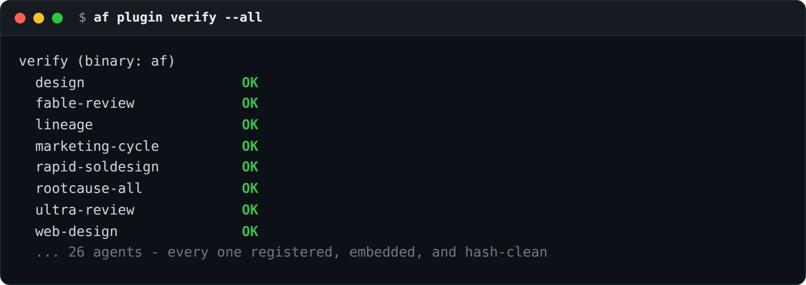
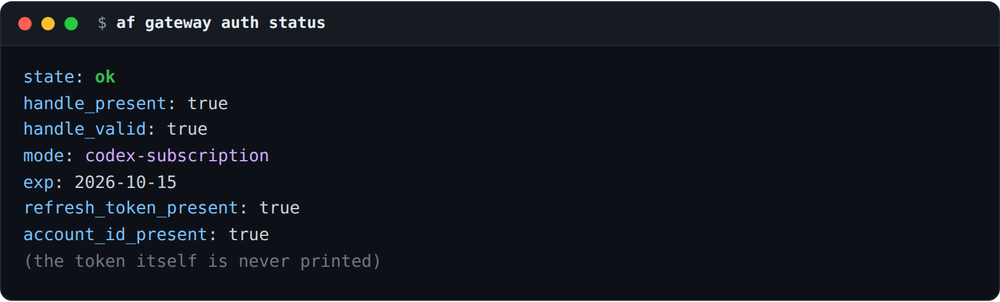
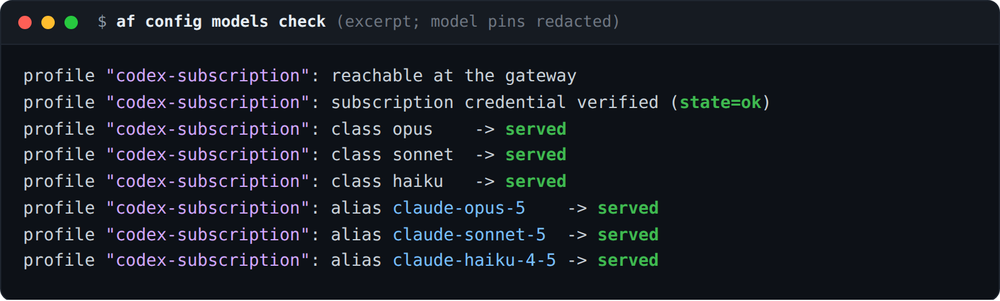

Install a third-party agent behind a trust boundary, run the model gateway on a ChatGPT subscription, and make every relaunch use the config I actually set - agentfactory, the multi-agent orchestration CLI for Claude Code.
I run a factory of autonomous Claude Code agents. Three things it could not do last month, and all three were the kind of gap you only notice when it bites you:
This release fixes all three. Here is what each one buys a human operator, and the command you type to get it.
af plugin install <name> # add a third-party agent, with consent
af gateway auth import # run the gateway on your ChatGPT subscription
# relaunch fidelity is automatic - every respawn rebuilds the launch the same way `af up` doesaf plugin install - run someone else's agent, without trusting it blindExtending the factory used to mean copying an agent into the store and hoping. Now you clone a plugin repository and install it, and install IS the consent step - nothing enters the factory until you run it:
af plugin list # review what's been acquired, and its per-formula install status
af plugin install <name> # validate, stage, record provenance, rebuild, verify
af plugin verify # later: has anything drifted from what I installed?What makes it safe is what it records and what it refuses. On install, af writes down where each agent came from - source, commit, content hashes - so af plugin verify can tell you later whether a single byte has drifted. A name that would shadow a shipped agent, or manager, or supervisor, is refused. An agent whose role template is not built into the binary is refused at launch instead of quietly running under a substituted identity. And installed agents survive a redeploy now, instead of being swept away as orphans.
That drift check is the part I lean on. af plugin verify --all walks every agent the factory knows and confirms each one is registered, embedded, and hash-clean - the same check that catches a plugin that changed under you:

Honest about the edge: this is the trust boundary, not a marketplace. There's no central registry yet - you point it at a git repo you choose, and the guarantee is that what you installed is what keeps running. Tools come the same way: an integration installs from a pinned upstream commit as a read-only snapshot, literal credentials and reserved keys are refused, and a formula whose required tool is missing, drifted or down is refused BEFORE it creates a single bead or worktree. The full contract is in USING_PLUGINS.md.
af gateway auth import - run the whole thing on your ChatGPT subscriptionThe model gateway used to bill one thing: an OpenAI API key. Now it can run on the ChatGPT subscription you already pay for. One flag at setup wires it up:
quickstart.sh --litellm --litellm-auth=codex-subscriptionThat installs the Codex CLI, runs its device login before any agent is taken down, and routes every lane through the subscription. A compatibility callback fixes the "System messages are not allowed" rejection that would otherwise break every Claude Code turn on that route. The credential is managed by af gateway auth and stored readable by its owner only - and neither command ever prints a token:

The payoff is the part I wanted most: my Claude Code agents are being served by that subscription right now. af config models check sends the same kind of request a real session sends - streamed, with a block-array system prompt - so a green check means a lane a real agent can actually use, not a hopeful ping:

If the subscription credential is expired or has no refresh token, af reports it as a credential failure - not a dead session you'd waste an hour chasing. --first gives you one quick verdict line when you don't want the full sweep.
This is the one you can't screenshot, and it's the one I'd lost the most time to. An agent's launch configuration used to live in two places - the tmux session environment AND the launch line - and a respawn rebuilt only one of them. So a relaunched agent could come back on a reduced effort level with no record of it, a build host you had removed, or a literal auth token sitting in the session environment where any window could read it.
Now handoffs, watchdog and recovery respawns, af sling and the dispatcher all build the launch the same way af up does. Remove a build host or set a git identity, and it takes effect on the next recycle - not three respawns later. No auth token sits in the tmux environment. A window you open by hand no longer inherits the agent's endpoint or model. And effort levels finally mean what they say: a reduced-effort launch is recorded on the session itself, survives formula completion, can't leak into a later session, and the grader is told about it only when the session it's grading actually ran reduced. af fidelity status now shows interventions and effort as columns, so you can see after the fact what the grader saw.
It's a correctness guarantee more than a feature - the kind of thing you notice only because the weird intermittent bug stopped happening.
It's on GitHub, Go, AGPL-3.0: github.com/stempeck/agentfactory. The plugin and integration trust model is documented end to end in USING_PLUGINS.md; the subscription gateway is in USING_LITELLM.md.
If you run a factory of agents, clone one plugin you trust this week and run af plugin verify against it - that's the first time "is this still the agent I installed?" has an answer you can point at instead of a shrug.
Learn it, Live it, Share it!